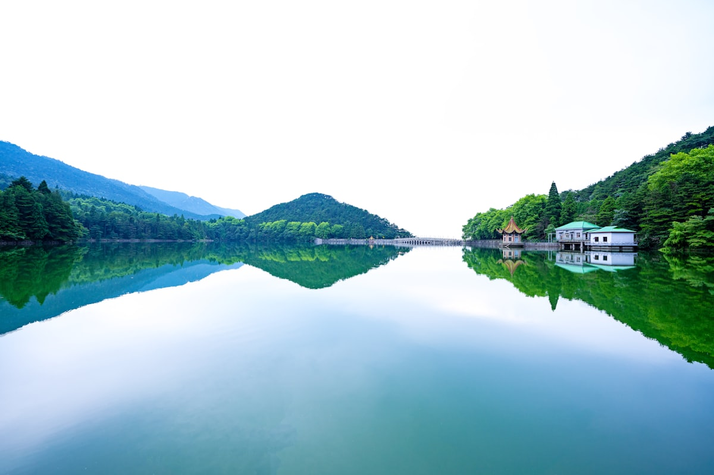
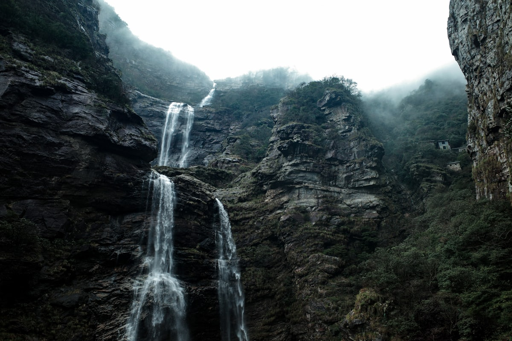
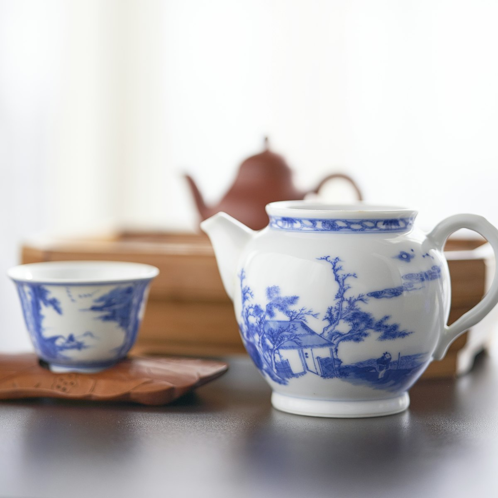
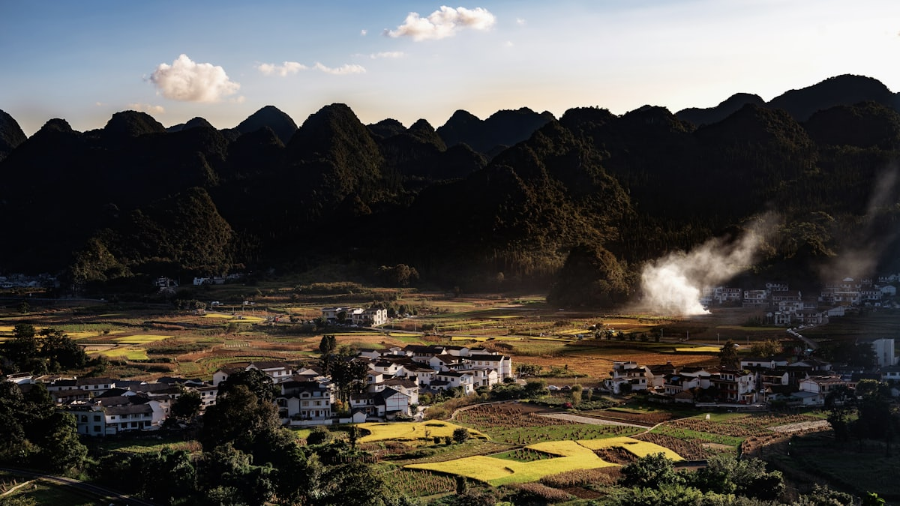
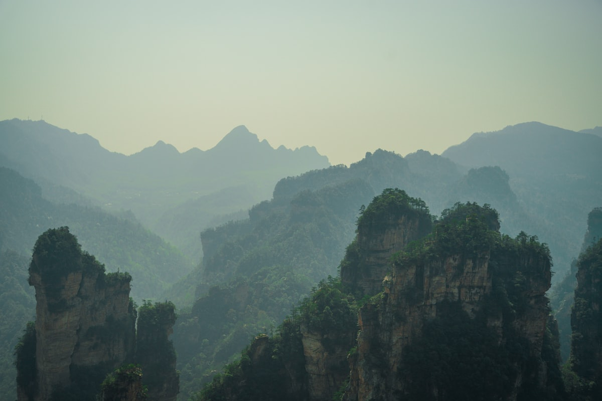
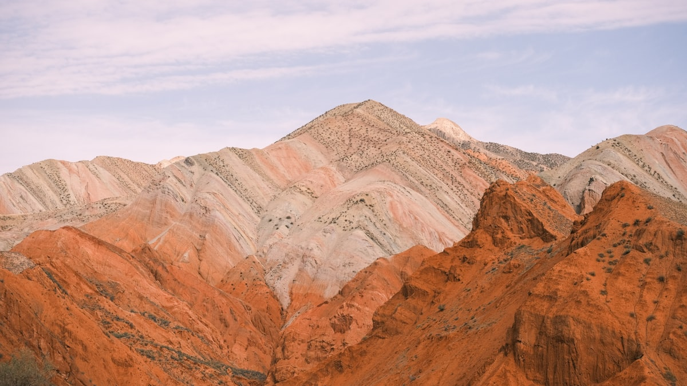
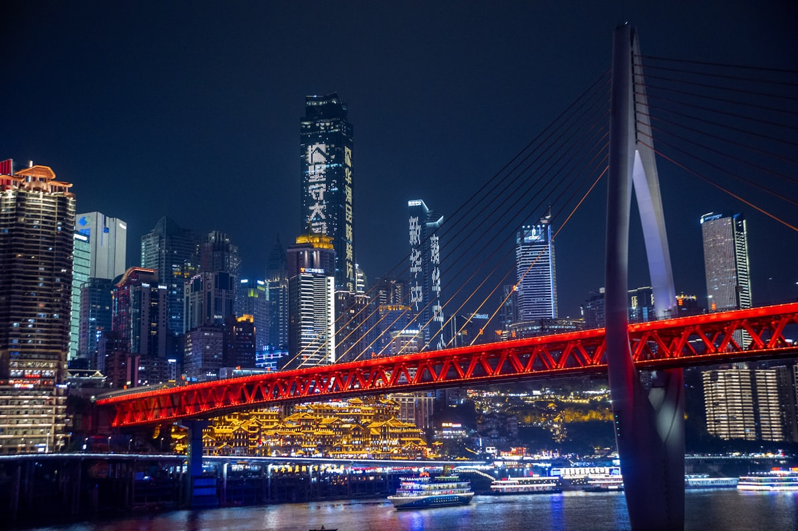

| 事项 | 结论 |
|---|---|
| 事项 | 结论 |
| 推荐方案 | 10 天 9 晚（南昌进南昌出，东西向环线） |
| 返程约束 | 第 10 天从龙虎山返南昌，晚间返程 |
| 行程链 | 南昌 → 庐山 → 景德镇 → 婺源 → 三清山 → 龙虎山 → 南昌 |
| 预算（人均） | 经济 3800–4800 ／ 标准 5800–7800 ／ 舒适 9200–12500 |
| 三件提前事 | ① 三清山索道票与住宿提前订 ② 婺源旺季（3–4 月油菜花）住宿火爆 ③ 庐山山上温差大备外套 |
| 季节提醒 | 4–6 月与 9–11 月最佳；盛夏庐山是避暑胜地，冬季山上有雪 |
| 交通卡 | 江西省内高铁直达主要城市，无需办交通卡 |
以下为 10 天 9 晚的推荐节奏。山岳类景区各留整天，古村与瓷都留半天到一天。
| 日期 | 行程 | 过夜地 | 主题 |
|---|---|---|---|
| D1 抵南昌 | 抵达南昌，傍晚滕王阁夜景 + 赣江灯光秀 | 南昌 | 抵达 + 预热 |
| D2 | 南昌：八一广场 → 南昌起义纪念馆 → 下午赴庐山（索道上山） | 庐山牯岭 | 英雄城 + 匡庐 |
| D3 | 庐山：含鄱口 → 三叠泉 → 花径/如琴湖 | 庐山牯岭 | 庐山精华 |
| D4 | 庐山：五老峰/锦绣谷 → 下山赴景德镇，宿陶溪川附近 | 景德镇 | 转场瓷都 |
| D5 | 景德镇：古窑民俗博览区 → 中国陶瓷博物馆 → 陶溪川 | 景德镇 | 千年瓷都 |
| D6 | 高铁赴婺源：篁岭（天街、晒秋）→ 江湾古镇 | 婺源 | 徽州古村 |
| D7 | 婺源：李坑/江岭 → 下午赴三清山，宿山下 | 三清山脚下 | 转场三清 |
| D8 | 三清山：金沙索道 → 巨蟒出山 → 东方女神 → 西海岸栈道 | 三清山脚下 | 峰林奇观 |
| D9 | 赴龙虎山：仙水岩游船 → 天师府 → 夜宿鹰潭/龙虎山 | 龙虎山 | 丹霞道源 |
| D10 返程 | 上午泸溪河竹筏 → 午后返南昌，晚间返程 | — | 收尾 |
以下为 10 天全程的逐小时执行时间线，可当作「当天打开照着走」的清单。标注 ※ 的可选项视体力与天气取舍。
| 时间 | 事项 |
|---|---|
| 14:00–17:00 | 抵达南昌（高铁到南昌西站，飞机到昌北机场），地铁进城 |
| 17:30–18:30 | 办理入住（推荐滕王阁/红谷滩，近地铁与赣江） |
| 19:00–21:00 | 滕王阁夜游（门票 50–80 元，夜场另计）：灯光秀、赣江两岸夜景 |
| 21:00 | 晚餐：南昌拌粉、瓦罐汤，回酒店休息 |
| 时间 | 事项 |
|---|---|
| 08:30–10:00 | 八一广场（免费）：军旗升起的地方，八一起义纪念碑 |
| 10:00–11:30 | 南昌八一起义纪念馆（免费需预约）：了解建军历史 |
| 12:00–13:00 | 午餐：南昌拌粉 + 藜蒿炒腊肉 |
| 13:30–15:00 | 乘高铁赴九江站（约 40 分钟），转乘索道上庐山（约 20 分钟） |
| 15:30–17:00 | 入住牯岭镇，傍晚逛正街、美庐别墅外观 |
| 18:30 | 晚餐：山上农家菜（石鸡、笋干烧肉） |
| 时间 | 事项 |
|---|---|
| 07:30 | 早起乘观光车赴含鄱口看日出云海（看运气） |
| 08:30–11:30 | 三叠泉（需单独门票 64 元）：李白笔下「飞流直下三千尺」的瀑布，往返约 2600 级台阶 |
| 12:00–13:00 | 午餐：景区内简餐或回牯岭 |
| 14:00–16:30 | 花径 + 如琴湖：白居易「山寺桃花」诗地，湖光山色 |
| 17:00–18:00 | 锦绣谷/仙人洞远眺，晚餐后早点休息 |
| 时间 | 事项 |
|---|---|
| 08:30–10:30 | 五老峰（可选，体力型）或 美庐别墅 + 庐山会议旧址（人文） |
| 10:30–12:00 | 乘索道下山，赴九江站乘高铁至景德镇北站（约 1.5h） |
| 13:00 | 入住陶溪川/人民广场附近 |
| 14:30–17:30 | 陶溪川文创园（免费）：老瓷厂改造街区，周末有集市 |
| 18:30 | 晚餐：景德镇特色（碱水粑、冷粉、瓷泥煨鸡） |
| 时间 | 事项 |
|---|---|
| 08:30–11:30 | 古窑民俗博览区（门票 95 元）：看制瓷七十二道工序，可体验拉坯 |
| 11:30–12:30 | 午餐：景德镇冷粉、碱水粑 |
| 13:00–15:30 | 中国陶瓷博物馆（免费需预约）：镇馆之宝元代青花瓷、各朝名瓷 |
| 16:00–17:30 | 御窑厂遗址（门票 60 元）：明清皇家窑址，网红拍照地 |
| 18:00 | 晚餐：陶溪川周边，宿景德镇 |
| 时间 | 事项 |
|---|---|
| 08:00 | 景德镇北站乘高铁赴婺源站（约 20 分钟），转车前往篁岭 |
| 09:30–12:00 | 篁岭（门票 + 索道约 145 元）：天街、晒秋观景台、垒心桥，梯田村落 |
| 12:00–13:00 | 篁岭内午餐：徽菜（糊豆腐、粉蒸肉） |
| 13:30–15:00 | 继续逛怪屋、水街，索道下山 |
| 15:30–17:30 | 江湾古镇（门票 60 元）：萧江宗祠、徽派老宅 |
| 18:30 | 入住婺源县城/李坑民宿，晚餐徽州菜 |
| 时间 | 事项 |
|---|---|
| 08:30–10:30 | 李坑（门票 55 元）：小桥流水人家，徽派村落的代表作 |
| 10:30–11:30 | 可选：江岭（油菜花季必去，非花季可跳过） |
| 11:30–12:30 | 午餐后包车/高铁转往三清山（约 1.5–2h） |
| 14:00 | 入住三清山金沙索道口附近 |
| 15:30–17:30 | 山下适应休整，采购登山补给（水、干粮、雨衣） |
| 18:30 | 晚餐：山下农家菜，早睡备战 D8 |
| 时间 | 事项 |
|---|---|
| 07:30 | 金沙索道乘缆车上山（约 8 分钟，往返 125 元） |
| 08:30–10:00 | 巨蟒出山：标志性石柱，天然形成 128 米高 |
| 10:00–11:30 | 东方女神：最优雅的花岗岩造型，南清园景区 |
| 11:30–12:30 | 山顶午餐（自带干粮或景区餐厅） |
| 13:00–16:00 | 西海岸栈道：悬空玻璃栈道，云海季节如在仙境 |
| 16:30 | 乘索道下山，宿金沙索道口 |
| 时间 | 事项 |
|---|---|
| 08:00 | 包车/高铁赴鹰潭龙虎山（约 2.5h） |
| 10:30–12:30 | 仙水岩（龙虎山门票 + 观光车约 120 元）：竹筏/游船游泸溪河，看崖墓悬棺 |
| 12:30–13:30 | 午餐：鹰潭牛肉粉、上清豆腐 |
| 14:00–16:00 | 天师府（含联票）：道教祖庭，正一观 |
| 17:00 | 宿龙虎山景区或鹰潭市区，晚餐丹霞鱼宴 |
| 时间 | 事项 |
|---|---|
| 08:30–10:30 | 上午可补游泸溪河漂流或 象鼻山观景台 |
| 10:30–11:30 | 采购伴手礼：龙虎山铁皮石斛、上清豆腐乳、陶瓷小件 |
| 12:00 | 乘高铁返南昌（约 1.5h），午餐 |
| 13:30–17:00 | 赴南昌西站/昌北机场，返程 |
必去（必去）/ 顺路（顺路）/ 可跳过（可跳过）。

必去
必去
必去
必去
顺路
顺路图片为 Unsplash 主题图（庐山湖景、瀑布、峰林、丹霞、陶瓷、古建、夜景均为实景或同主题示意），用于页面配图。更多免费景点：八一广场、南昌起义纪念馆、婺源江湾古镇。
点击左侧节点可在地图上定位；点击地图 marker 会高亮对应节点。坐标为 WGS-84 转 GCJ-02 纠偏后标注。
以下为单人、不含购物的估算；门票为旺季参考价，以现场为准。交通按高铁往返计（从华东周边城市出发约 1100–1600 元），不同出发地浮动较大。
| 项目 | 经济（3800–4800） | 标准（5800–7800） | 舒适（9200–12500） |
|---|---|---|---|
| 往返交通 | 高铁约 1100–1500 | 高铁/飞机约 1500–2400 | 飞机 + 接送约 3000–4200 |
| 住宿（9 晚） | 青旅/快捷 850–1200 | 连锁酒店 1900–2700 | 景区度假/古村民宿 4500–6000 |
| 门票 | 基础景点约 420 | 含索道联票约 700 | 全含 + 演出约 1150 |
| 餐饮（10 天） | 600–850 | 1200–1600（含徽菜/鱼宴） | 2000–2800（老字号/茶宴） |
| 省内交通 | 高铁 + 大巴 400–550 | 高铁 + 包车 750–1000 | 包车 1300–1800 |
带娃推荐：景德镇古窑体验拉坯（小朋友最爱）、中国陶瓷博物馆、婺源篁岭索道与怪屋、三清山西海岸栈道。庐山三叠泉台阶多，可换成花径与如琴湖轻松游。
9 月中–11 月婺源篁岭晒秋进入最佳期，色彩最艳；此时三清山云海概率也高。酒店价格比春节/油菜花季低 20–30%。
| 方式 | 时长 | 参考价 | 备注 |
|---|---|---|---|
| 高铁（推荐） | 视出发地 2–8h | 二等座 250–1600 元 | 南昌西站为枢纽，赣北赣东均通 |
| 飞机 | 视出发地 1.5–3h | 400–2000 元 | 南昌昌北国际机场 |
| 自驾 | 视出发地 | 高速费 + 油费 | 山区弯道多，雨雾天谨慎 |
| 区域 | 价格/晚 | 优点 | 短板 |
|---|---|---|---|
| 南昌滕王阁/红谷滩 | 快捷 250–450 / 星级 500–1000 | 近赣江夜景、地铁 | 旺季房源紧俏 |
| 庐山牯岭镇 | 民宿 200–450 / 星级 500–900 | 山上避暑、近核心景区 | 旺季一房难求需早订 |
| 景德镇陶溪川旁 | 民宿 250–450 | 文创氛围浓、近古窑 | 周末人多 |
| 婺源县城/李坑 | 民宿 150–400 | 徽州风情、性价比高 | 景点分散需包车 |
| 三清山金沙索道口 | 酒店 200–400 | 离索道最近、省时 | 山下配套简单 |